A / EXISTING
Baseline condition
Enclosed gallery, opaque boundaries and interrupted views make the route difficult to anticipate.
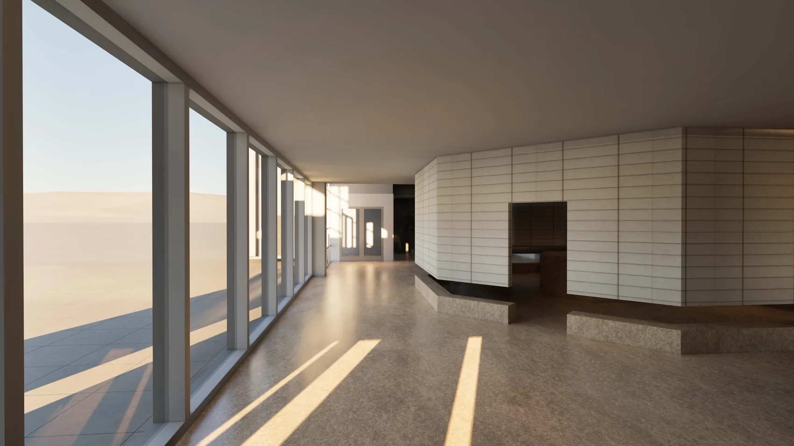
A spatial UX proposal for a clearer journey from the Human Ecology Building Terrace Level to MVR Commons.
At the Terrace Level elevator landing, the way to MVR Commons is difficult to see. An enclosed gallery cuts off long sightlines just as visitors need to choose a direction.
People must orient themselves, infer which corridor continues, and confirm their choice only after moving farther into the space. The design goal is a route that becomes readable earlier while protecting circulation and exhibition use.
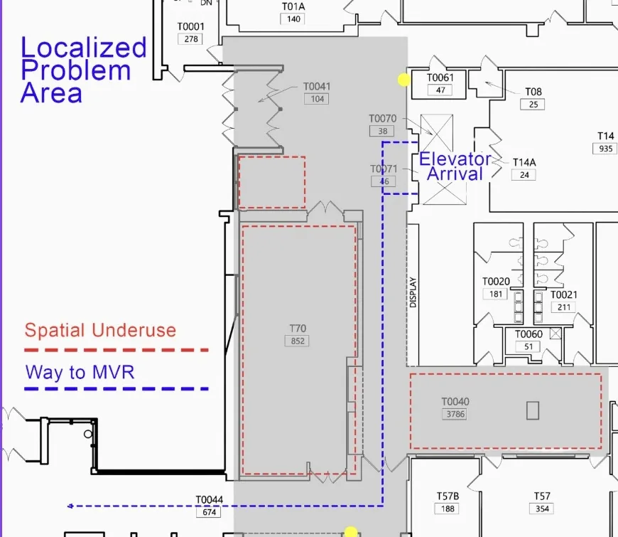
Recognize the arrival zone and nearby spatial structure.
Understand the destination’s direction before moving too far.
See enough of the next route segment to move with confidence.
Site photographs show the elevator landing, the corridor and the gallery edge. Together with the baseline model, they make the original condition legible before any intervention.
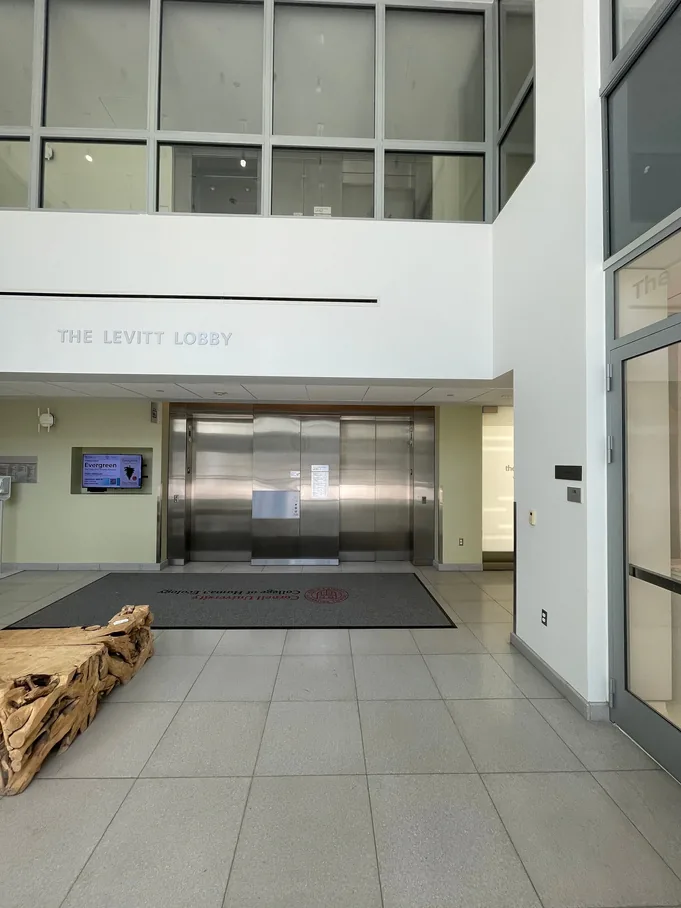
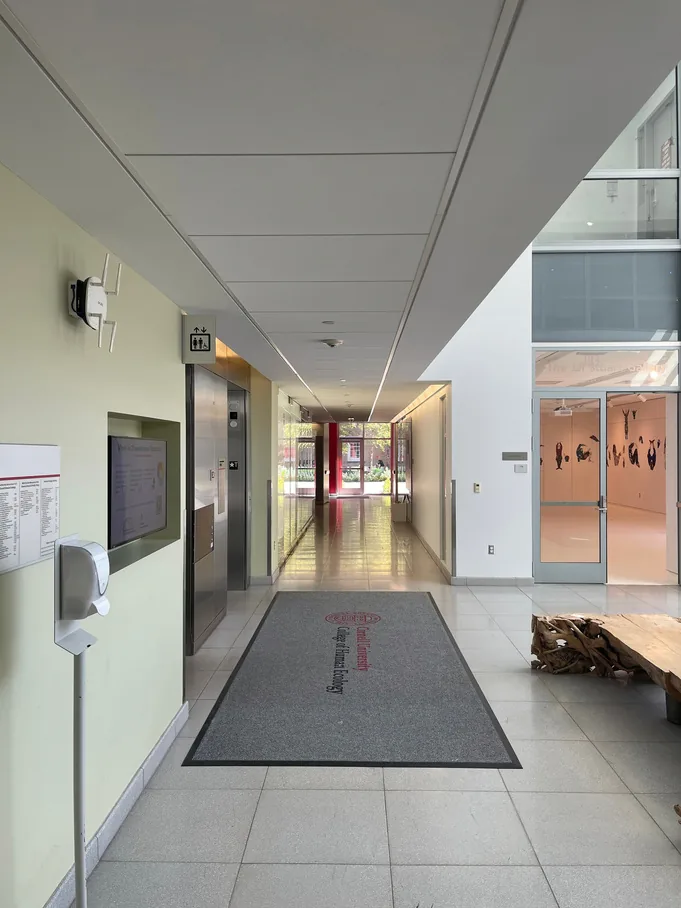
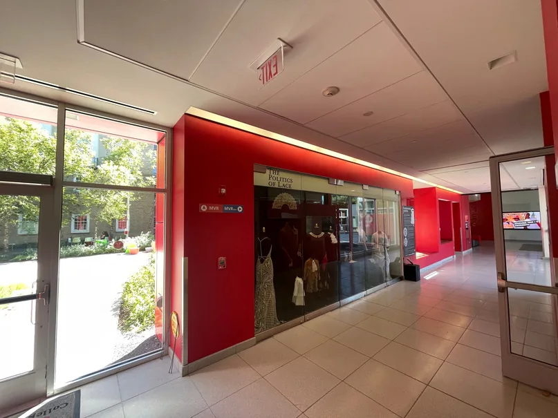
Opaque boundaries and an enclosed exhibition zone segment the arrival space. Visitors cannot clearly read the primary route from the initial decision point.
See what changed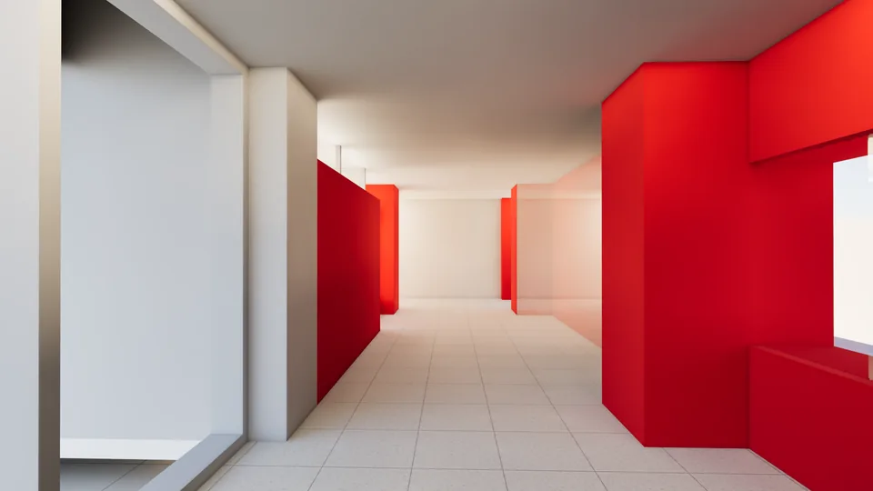
The enhanced condition changes what a visitor can see and how the circulation route reads. Testing then shaped a more controlled final proposal.
Enclosed gallery, opaque boundaries and interrupted views make the route difficult to anticipate.
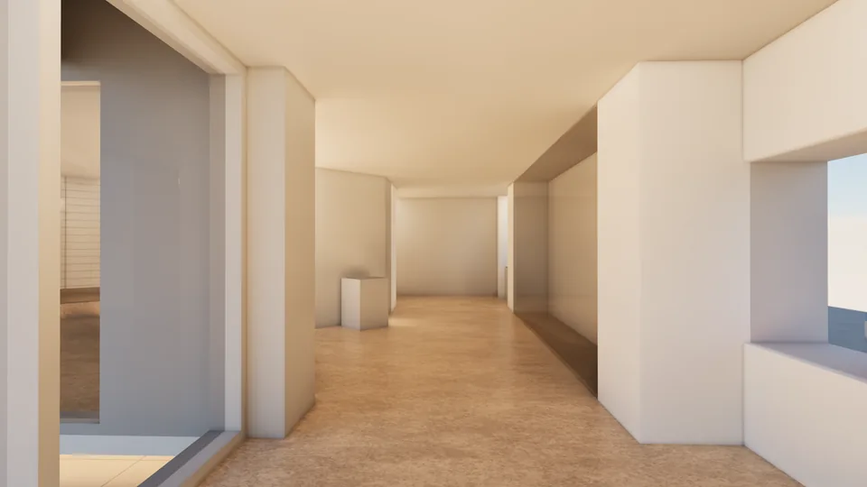
B / TESTEDAn edge-aligned circulation spine, open gallery nodes and greater visual permeability reveal more of the route ahead.
Keep B’s open spatial structure, then protect sightlines, define display zones and use subtle directional confirmation.
Align circulation along the perimeter edge so the main route reads as a connected sequence.
Open the gallery and reduce opaque boundaries to reveal adjacent spaces and the next route segment.
Use a recognizable cue and restrained destination confirmation to reinforce the spatial layout.
Start at the elevator landing in each 360° tour. Look for the path toward MVR Commons, then compare how far ahead you can see and when the route becomes clear.
Opaque gallery boundaries break the view toward the next segment.
Open baseline tourOpen exhibition nodes and a perimeter spine reveal more of the path.
Open enhanced tourEach of eight participants explored both the baseline and enhanced 360° prototypes. The study asked whether changes to the gallery and circulation could make the route to MVR Commons easier to read.
Both tours used the same simulated HEB Terrace Level elevator landing, MVR Commons destination, first-visit scenario, moderator instructions and observation checklist.
A retained an enclosed gallery and opaque boundaries. B opened the exhibition into smaller nodes, increased visual connections and aligned the main route along the glazed perimeter.
Every participant experienced both environments. Four completed A → B, and four completed B → A, reducing the influence of learning the route on the second attempt.
Participants were asked to imagine visiting this part of the building for the first time and to navigate to MVR Commons using environmental information only, without directional help.
Explain the study, review instructions, and record background and prior familiarity with the route.
Start at the elevator landing in the assigned A or B environment and find MVR Commons.
Rate clarity, confidence, layout support and ease of navigating without help on 1–5 scales.
Return to the matched start view and repeat the same destination task in the other environment.
Complete the same rating questions for the second tour so both versions can be compared.
Choose which version better supported the journey and discuss cues, uncertainty and design trade-offs.
First movement, route commitment, hesitation, visual search, wrong turns, backtracking and completion time.
Post-condition ratings, direct A/B choices, think-aloud comments and a short semi-structured interview.
Eight participants experienced both 360° environments in counterbalanced order. They navigated from the simulated elevator landing to MVR Commons, then rated each condition and compared them directly.
selected the enhanced environment for the better overall navigation experience. The same 7/8 pattern appeared across the direct comparisons of layout clarity, confidence, route continuation and less stopping or searching.
These descriptive results support the tested B condition. The refined C direction has not been separately evaluated. Seven of eight participants already knew this route; A and B post-condition response counts differ. A larger, less familiar sample and a real-space test would strengthen the conclusion.
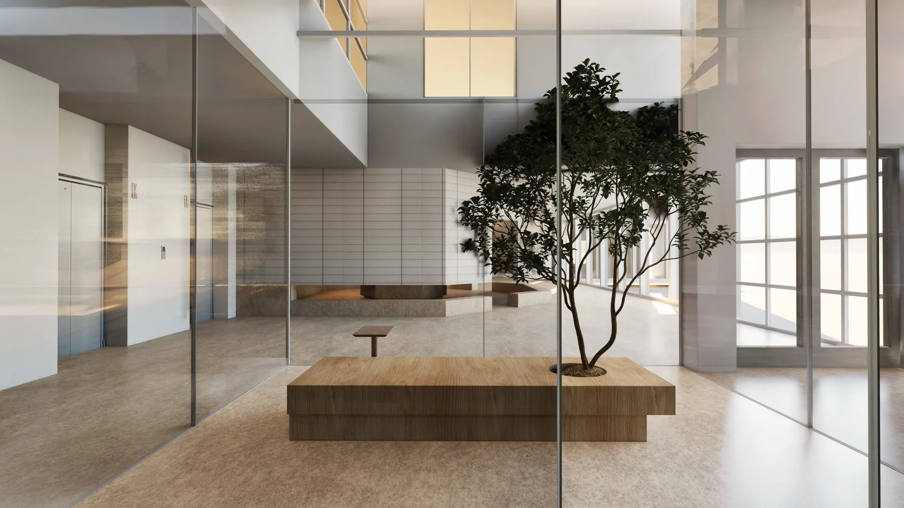
The study supports a continuous path, longer sightlines and a more permeable gallery. The final proposal focuses on keeping those gains clear as the space is used.
Move from the elevator arrival point along the gallery edge and toward MVR Commons. Explore the Revit model in Autodesk Viewer: rotate, zoom or use First Person to move through the space. The viewer opens in a new tab.
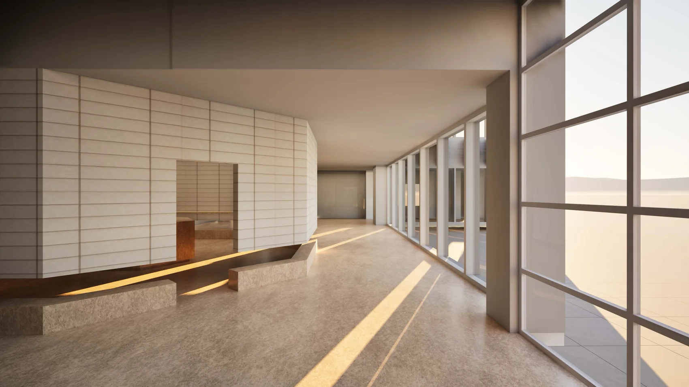
Six perspectives trace the proposed experience from the glazed corridor through the gallery and central commons. Together, they show how the circulation edge, open display areas and planted landmark shape the journey.
Glazing and the gallery opening let visitors preview the next part of the route.
The window-side walking zone continues past the gallery as one readable line.
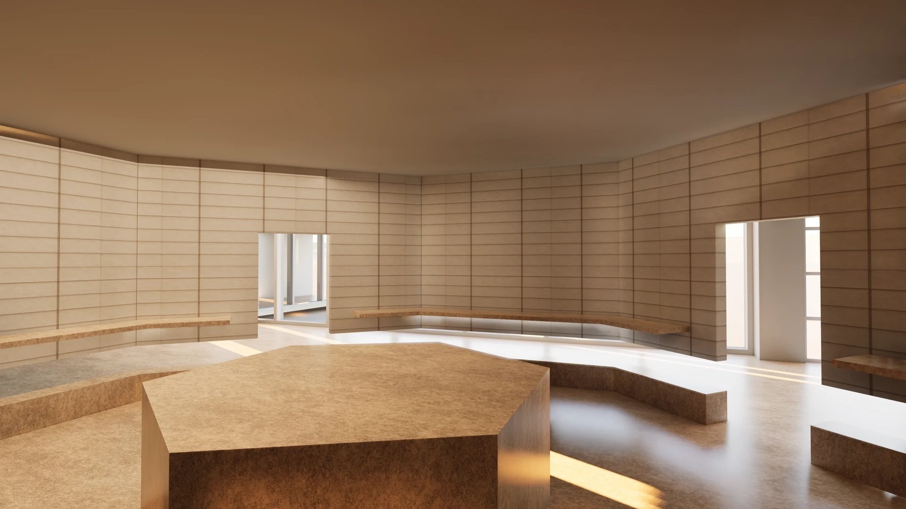
Curved display walls define the room, while openings connect it visually to circulation.
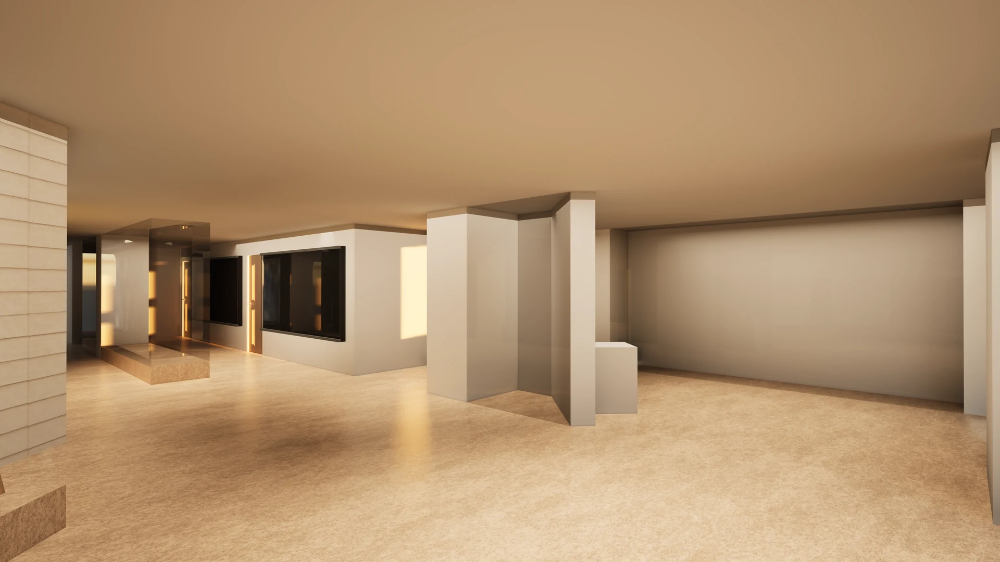
Display surfaces and an open floor offer room for changing exhibitions beside circulation.
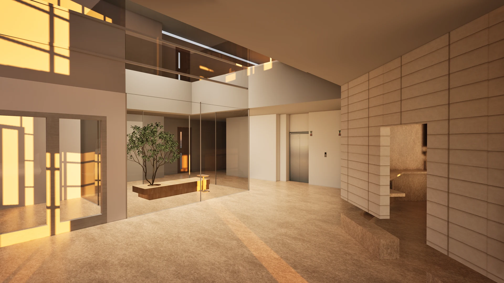
Transparent boundaries keep the gallery, elevator area and planted landmark in view.
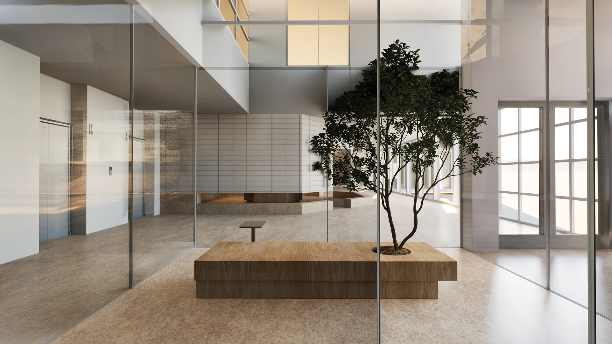
A tree and integrated seat give the open atrium a recognizable point of reference.
The complete 17-page booklet contains existing and proposed plans, reflected ceiling plans, interior elevations, building sections, an enlarged gallery drawing, schedules and perspective renderings.
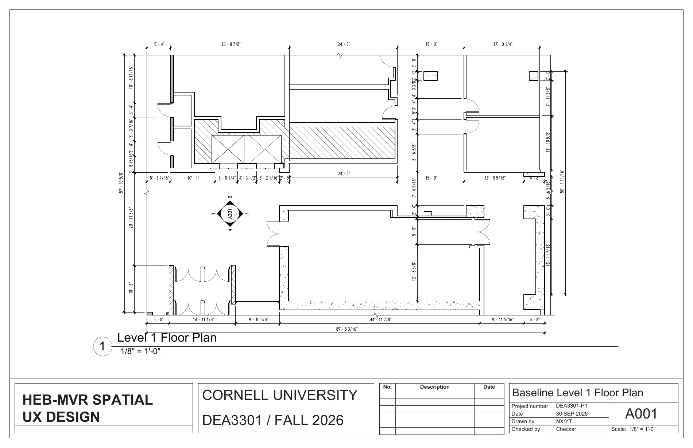
A001 / BASELINE PLAN ↗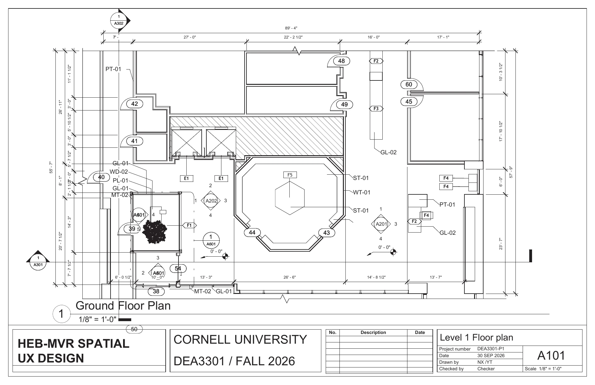
A101 / PROPOSED PLAN ↗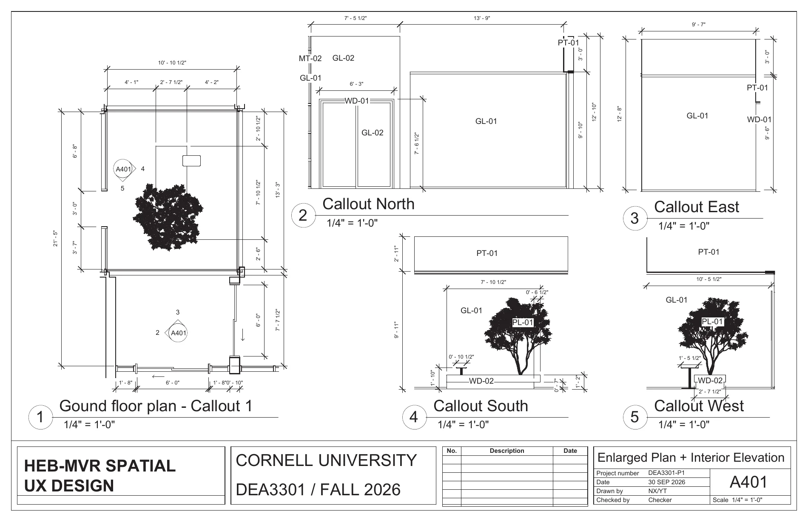
A401 / GALLERY DETAIL ↗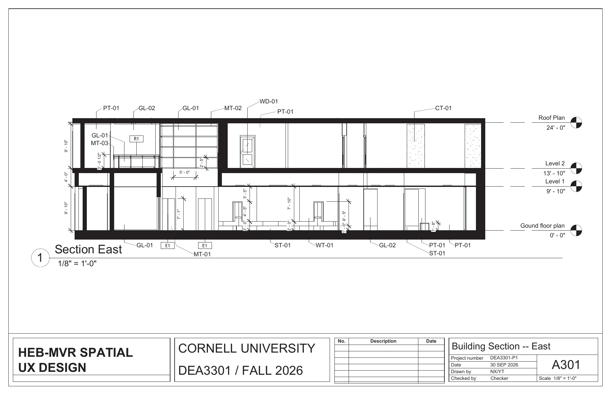
A301 / BUILDING SECTION ↗Open the organized PDF to inspect every sheet and construction document at full resolution.